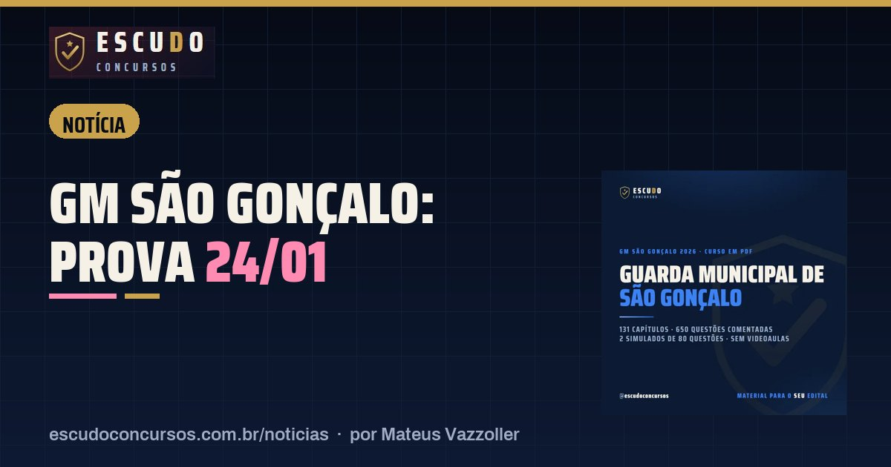

GM São Gonçalo: prova objetiva em 24/01/2027 e gabarito preliminar em 25/01
NotíciaPublicado em 13 de novembro de 2026, atualizado em 23 de novembro de 2026 · por Mateus Vazzoller, ESCUDO Concursos

Atualização em 23/11/2026: As inscrições terminaram em 18/11. A prova objetiva é em 24/01/2027, domingo de manhã, com 4 horas de duração, e o gabarito preliminar sai em 25/01, com recurso em 26 e 27/01. Até lá são cerca de nove semanas, e o cronograma de 10 semanas já está ajustado a essa data.
| Órgão | Prefeitura de São Gonçalo/RJ, Guarda Municipal Nível II |
|---|---|
| Banca | Instituto SELECON |
| Vagas | 100 imediatas e cadastro de reserva de 500 |
| Inscrições | Encerradas em 18/11/2026 |
| Prova objetiva | 24/01/2027, de manhã, 4 horas |
| Gabarito preliminar | 25/01/2027, com recurso em 26 e 27/01 |
Quem quer vestir o uniforme da Guarda Municipal de São Gonçalo como Guarda Municipal Nível II tem até quarta-feira, 18/11/2026, para se inscrever no concurso do Instituto SELECON. O boleto da taxa de R$ 95,18 pode ser pago até quinta-feira, 19/11. São 100 vagas imediatas, mais 500 no cadastro de reserva, e vencimento de R$ 3.172,96. A prova objetiva é em 24/01/2027.
O que conferir antes de pagar o boleto?
Os requisitos são cumulativos, e dois deles costumam pegar candidato desatento.
| Requisito | O que o edital exige |
|---|---|
| Idade | De 18 anos completos a 35 anos, 11 meses e 29 dias, contados no primeiro dia do período de inscrição (28/09) |
| Escolaridade | Ensino médio completo |
| Habilitação | CNH categoria AB ou superior, comprovada na posse |
| Altura | 1,60 m (homens) e 1,55 m (mulheres) |
A idade é o ponto que mais mudou. A Retificação 02 passou a medir o limite no primeiro dia de inscrição, 28/09, e não mais na véspera do 35º aniversário. Quem já tinha completado 36 anos nessa data está fora, mesmo que a inscrição ainda esteja aberta. A CNH, por outro lado, só é cobrada na posse: dá para se inscrever agora e tirar a categoria AB durante o concurso.
Onde vai ser a prova?
A cidade de prova é escolhida na inscrição, entre São Gonçalo, Niterói e Rio de Janeiro. A aplicação é de manhã, com 4 horas de duração. Escolha pensando no deslocamento de um domingo cedo, e não só na distância.
O que vem depois de 18/11?
| Etapa | Data |
|---|---|
| Fim das inscrições | 18/11/2026 |
| Último dia para pagar o boleto | 19/11 |
| Prova objetiva | 24/01/2027, de manhã |
| Gabarito preliminar | 25/01/2027 |
| Prova de Capacidade Física e Exame Antropométrico | 27 e 28/02/2027 |
Entre o fim das inscrições e a prova são pouco mais de nove semanas. A objetiva tem 80 questões de quatro alternativas, e os Conhecimentos Específicos, com a Lei 13.022/2014, o SUSP e as leis municipais 1.416/2022 e 1.625/2026 (o novo Estatuto da Guarda de São Gonçalo), valem 40 dos 100 pontos. Zerar qualquer disciplina elimina. Peso de cada matéria, testes físicos e demais etapas estão no guia do concurso GM São Gonçalo.
A prova física vem cinco semanas depois da objetiva: a corrida de 12 minutos pede 2.400 metros para homens e 2.000 metros para mulheres, em tentativa única. Quem começa a treinar só depois do gabarito chega atrasado.
O cupom GMSG37 do curso ESCUDO para a GM São Gonçalo também vence em 18/11/2026: o PDF sai por R$ 37 em vez de R$ 47 até quarta-feira.
Confirme sempre o prazo no site do Instituto SELECON antes de pagar: esta notícia segue o Edital nº 001/PMSG/2026 com as Retificações 01 e 02, e não conseguimos consultar hoje a página do concurso para ver se saiu comunicado novo.
Curso ESCUDO Guarda Municipal de São Gonçalo em PDF: 131 capítulos e 650 questões comentadas, 2 simulados de 80 questões, de acordo com o edital. R$ 47.
Ver o curso
Perguntas frequentes
Até quando vão as inscrições da GM São Gonçalo?
Até 18/11/2026, no site do Instituto SELECON. O boleto da taxa de R$ 95,18 pode ser pago até 19/11.
Precisa ter CNH para se inscrever na GM São Gonçalo?
Precisa ter CNH categoria AB ou superior, mas ela só é comprovada na posse. Não é exigida no ato da inscrição.
Qual a idade máxima para a Guarda Municipal de São Gonçalo?
35 anos, 11 meses e 29 dias, contados no primeiro dia do período de inscrição, 28/09, conforme a Retificação 02.
Leia também
- NotíciaGM Campinas: inscrições e pedido de isenção abrem quarta, 25/11, às 10h
24 de novembro de 2026 · Inscrições da Guarda Municipal de Campinas abrem quarta, 25/11, às 10h, no site da Vunesp. Isenção até 02/12, inscrições até 08/01/2027 e taxa de R$ 67,90.
- NotíciaTRT-4 Técnico Judiciário: inscrições terminam quarta-feira, 25/11, às 23h59, e o boleto vence na quinta, 26/11
23 de novembro de 2026 · Concurso TRT-4 (RS): inscrições para Técnico Judiciário terminam em 25/11/2026, às 23h59, na FCC. Taxa de R$ 90,00, boleto até as 22h de 26/11.
- NotíciaIBGE Recenseador: inscrições encerradas; taxa vence sexta, 27/11, e isenção sai em 30/11
23 de novembro de 2026 · Inscrições do IBGE Recenseador encerradas: pague a taxa de R$ 70,00 até 27/11/2026, veja a isenção em 30/11 e as inscrições deferidas em 14/12.
Guia completo do concurso: edital, vagas e o que cai · Mais notícias e dicas de concursos